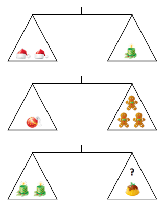

Schnitzeljagd Teil 6
Rätsel 6
Wiege - Rätsel
Fritz
möchte seinem Neffen und seiner Nichte jeweils ein Paket zu Weihnachten
schenken. Um keinen der beiden zu benachteiligen sollen beide Pakete
gleich schwer sein.
Da er zwar eine Balkenwaage hat, aber keine Gewichte dafür, macht er 2
Wiegevorgänge um herauszufinden, welcher Gegenstand wie viel wiegt.
Danach entscheidet er sich in ein Paket 2 Kerzen zu legen. Welchen
Gegenstand muss Fritz zusätzlich zu dem Kuchen in das andere legen,
damit die Pakete gleich schwer sind?
- Christbaumkugel
- Lebkuchenmann
- Kerze
- Mütze
- Kuchen
Hinweis: Es gibt 5 verschiedene Gewichte: 100 g, 200 g, 300 g, 400 g und 500 g. Jeder Gegenstand hat ein anderes Gewicht.

Hast
du die Lösung? Prima!
Tipp für die nächste Station: Schau nur, die Kinder haben einen Schneemann gebaut
C
Lösung: Lösung: 100g =
Lebkuchen, 200g = Mütze, 300g = Christbaumkugel, 400g = Kerze, 500g =
Kuchen; gesuchter Gegenstand = Lebkuchenmann